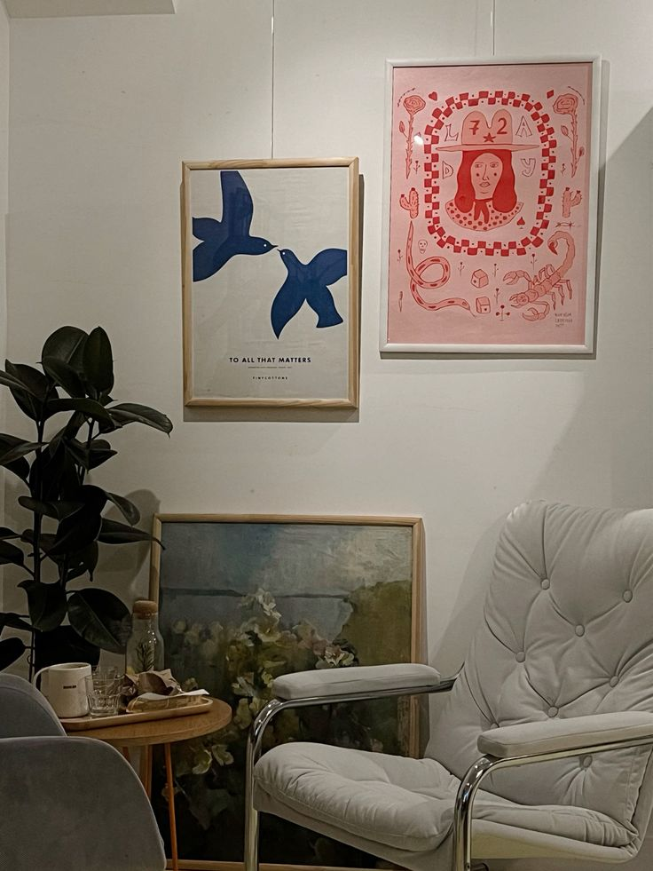
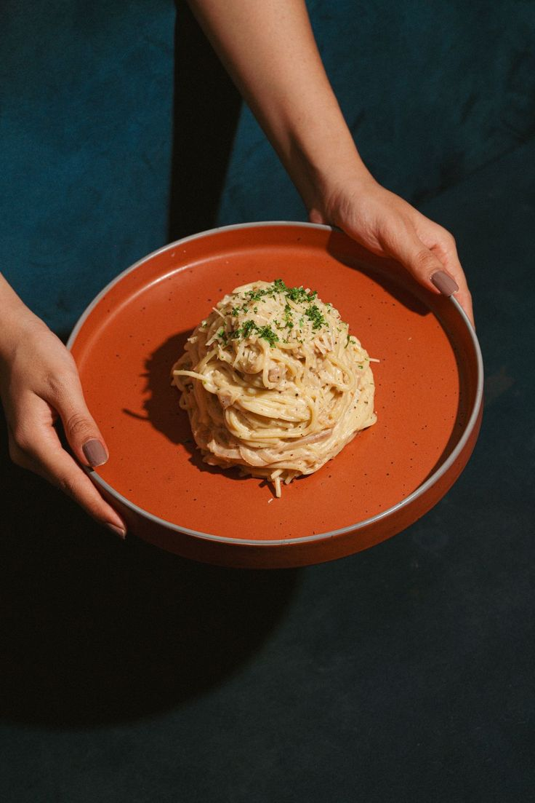
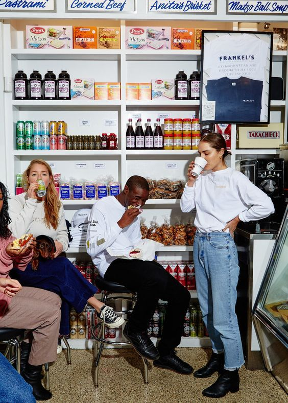
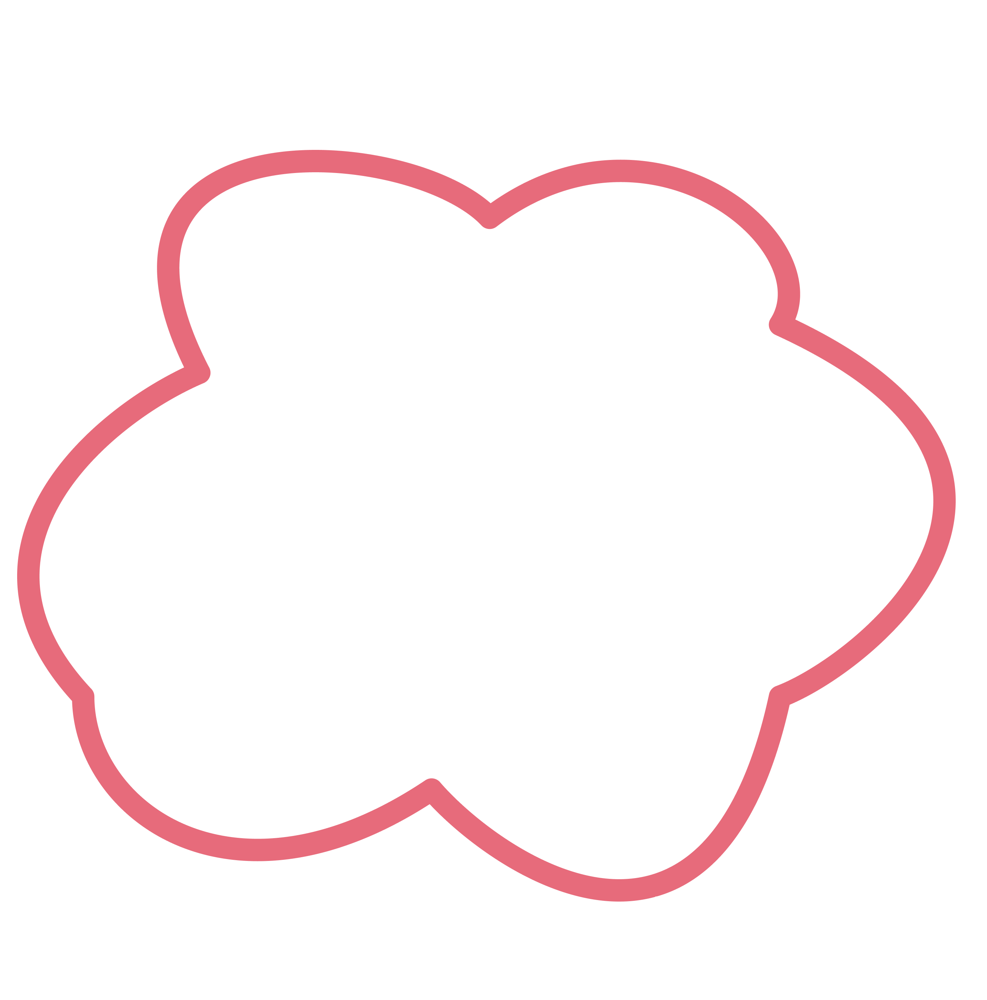

Новая выставка художника А. Фомина
Открытие новой серии работ — 15 января.
Новые работы исследуют тему городской среды и внутреннего диалога человека с пространством.
Арт-кафе, где к каждому блюду прилагается философская карточка. Творческие вечера, лекции и выставки — присоединяйтесь.
Забронировать столик


Открытие новой серии работ — 15 января.
Чтения и обсуждения — 22 января.

Лекции о гастрономии — февраль.
«Пища для тела и для ума» — каждое блюдо сопровождается цитатой, которая становится поводом для разговора и размышлений.

Команда «Философского супа» — бариста, шеф-повар и кураторы культурных программ, которые создают пространство для еды, искусства и живых бесед.
Мы верим, что уютная атмосфера, внимательное меню и немного философии в каждом дне помогают людям чувствовать себя дома.